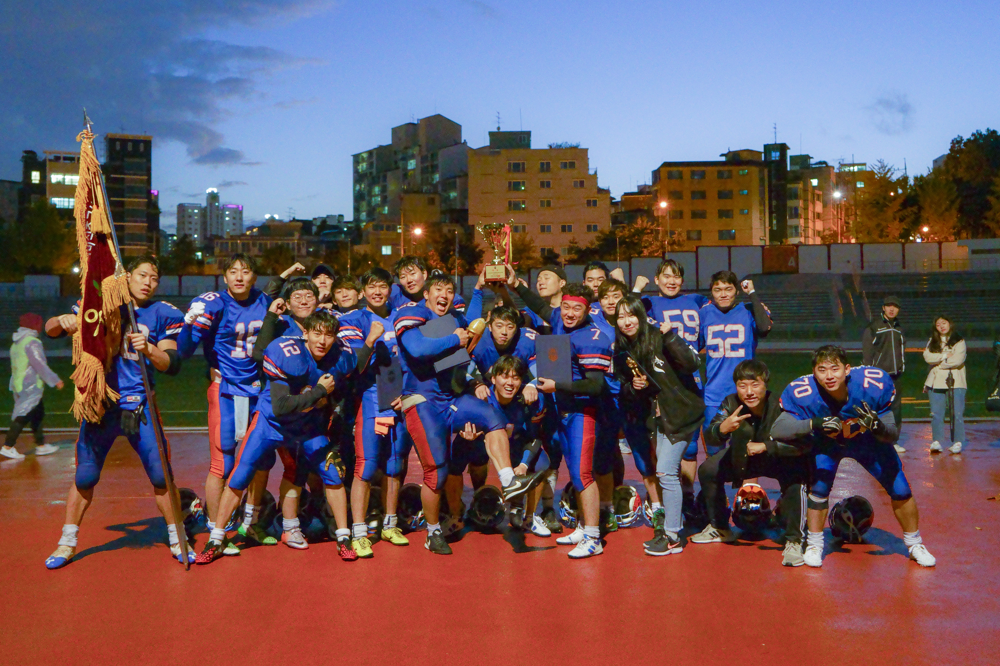
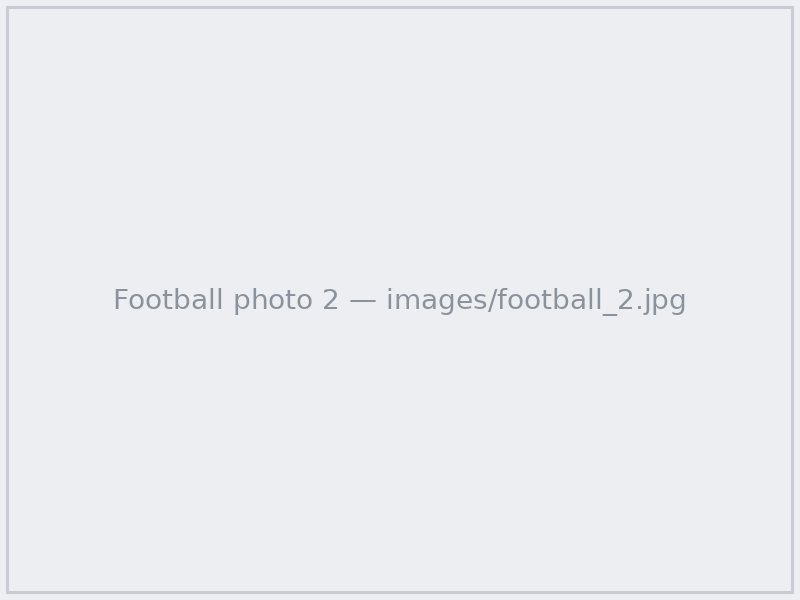
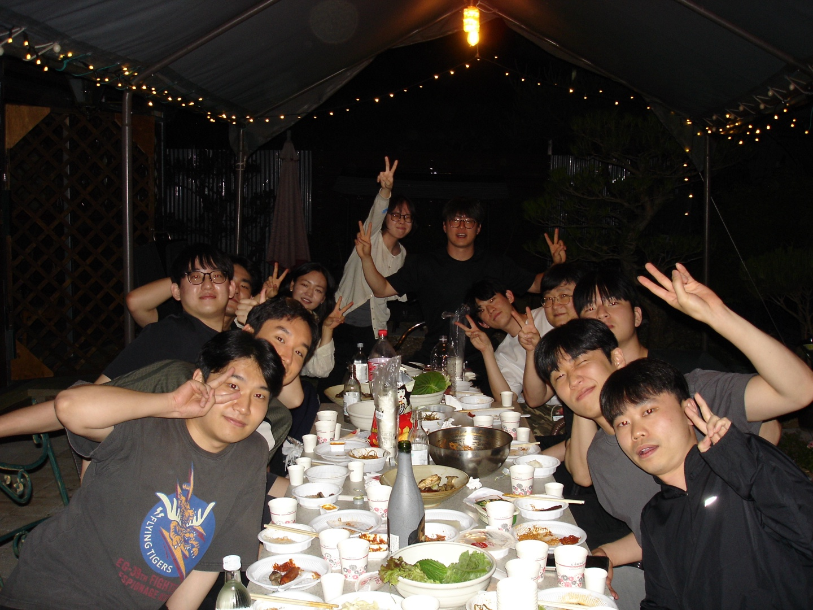
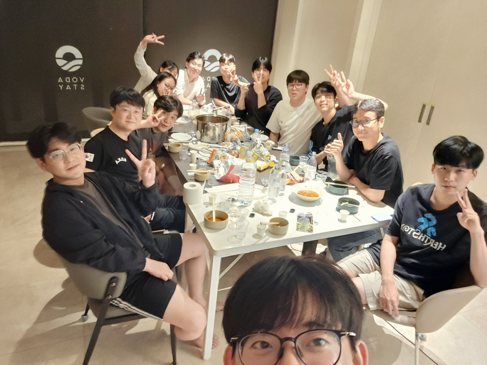
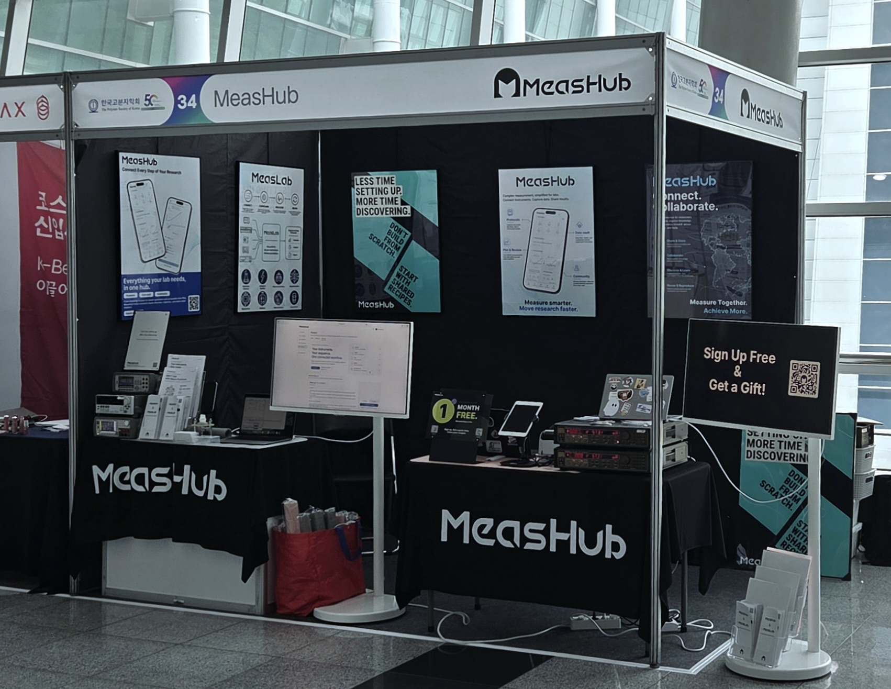
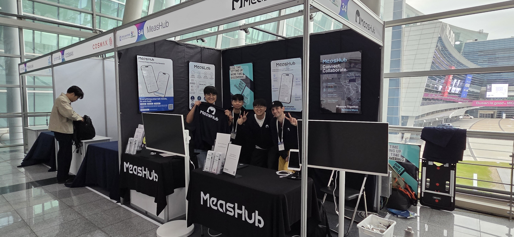

Beyond the LabResearch is only one part of my life. The activities I pursue outside the laboratory give me mental energy built on physical strength, and they have given me confidence and taught me teamwork and leadership. They are also what make my life richer and more colorful. American FootballI played for the Chung-Ang University American Football Club from 2018 and served as its president and captain from 2021 to 2023, leading both club operations and on-field performance. Our team won the Seoul Collegiate American Football Tournament in 2018, finished as runner-up in 2019, and placed third in 2021 during my time as captain. Football taught me to play as one team, to never give up until the final whistle, and to give everything we had to win each game. Serving as captain was an extraordinary opportunity to lead my teammates. Reviewing game film, identifying what went wrong, and proposing solutions to the team became a habit that has carried directly into my research.   Life in the LabI have spent more than four years in Prof. Felix Sunjoo Kim's laboratory, first as an undergraduate researcher and now as an M.S. student. Working closely with our neighboring laboratory and holding open discussions with senior and junior members have been among the most important ways I have grown as a researcher. Much of what I have learned came not from working alone but from growing together with the people around me.   Internship at MeasHubFrom July to September 2026, I interned at MeasHub, where I supported program management, including planning and coordination of ongoing programs, and contributed to the organization and on-site operation of conferences.   |